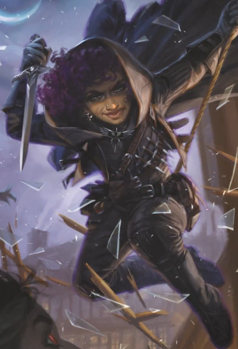

Les roublards comptent sur leur ruse, leur discrétion et les vulnérabilités de leurs ennemis pour prendre le dessus en toute situation. Ils ont le don de trouver la solution à presque tous les problèmes. Certains apprennent même des tours de magie pour compléter leurs autres capacités. Nombre d'entre eux se concentrent sur la discrétion et la tromperie, tandis que d'autres perfectionnent des compétences qui les aident dans les souterrains, comme l'escalade, la recherche et le désamorçage de pièges, et le crochetage de serrures.
Au combat, les roublards privilégient les coups subtils à la force brute. Ils préfèrent porter un coup précis plutôt qu'épuiser leur adversaire sous un déluge de coups.
Certains roublards ont débuté leur carrière en tant que criminels, tandis que d'autres ont utilisé leur ruse pour combattre le crime. Quel que soit le rapport à la loi d'un roublard, aucun criminel de droit commun ou représentant de la loi ne peut égaler l'intelligence subtile des plus grands roublards.
| Traits de base du roublard | |
|---|---|
| Caractéristique principale | Dextérité |
| Dé de vie | D8 par niveau de roublard |
| Maîtrise des jets de sauvegarde | Dextérité et Intelligence |
| Maîtrises de compétence | 4 au choix parmi : Acrobaties, Athlétisme, Tromperie, Intuition, Intimidation, Investigation, Perception, Persuasion, Escamotage et Discrétion |
| Maîtrise d'arme | Armes courantes et armes de guerre qui ont la propriété Finesse ou Légère |
| Maîtrise d'outils | Outils de voleur |
| Formation aux armures | Armures légères |
| Équipement de départ | Choisissez A ou B : (A) Armure de cuir, 2 dague, épée courte, arc court, 20 flèches, carquois, outils de voleur, sac de cambrioleur et 8 po ; ou (B) 100 po |
Devenir un roublard...
En tant que personnage de niveau 1
- Obtenez tous les traits de la table Traits de base du roublard.
- Obtenez les capacités de niveau 1 du roublard, présentées dans la table Capacités du roublard.
En tant que personnage multiclassé
- Obtenez les capacités suivantes de la table Traits de base du roublard : Dé de vie, maîtrise d'une compétence de votre choix parmi les compétences du roublard, maîtrise des outils de voleur et formation aux armures légères.
- Obtenez les capacités de niveau 1 du roublard, présentées dans la table Capacités du roublard.
Capacités de classe du roublard
| Niveau | Bonus de maîtrise |
Capacités de classe | Attaque sournoise |
|---|---|---|---|
| 1 | +2 | Expertise, Attaque sournoise, Argot des voleurs, Bottes d'arme | 1d6 |
| 2 | +2 | Ruse | 1d6 |
| 3 | +2 | Sous-classe de roublard, Visée appliquée | 2d6 |
| 4 | +2 | Amélioration de caractéristique | 2d6 |
| 5 | +3 | Frappe malicieuse, Esquive instinctive | 3d6 |
| 6 | +3 | Expertise | 3d6 |
| 7 | +3 | Esquive totale, Savoir-faire | 4d6 |
| 8 | +3 | Amélioration de caractéristique | 4d6 |
| 9 | +4 | Capacité de sous-classe | 5d6 |
| 11 | +4 | Frappe astucieuse améliorée | 6d6 |
| 12 | +4 | Amélioration de caractéristique | 6d6 |
| 13 | +5 | Capacité de sous-classe | 7d6 |
| 14 | +5 | Frappes sournoises | 7d6 |
| 15 | +5 | Esprit fuyant | 8d6 |
| 16 | +5 | Amélioration de caractéristique | 8d6 |
| 17 | +6 | Capacité de sous-classe | 9d6 |
| 18 | +6 | Insaisissable | 9d6 |
| 19 | +6 | Faveur épique | 10d6 |
| 20 | +6 | Coup de chance | 10d6 |
En tant que roublard, vous obtenez les capacités de classe suivantes lorsque vous atteignez les niveaux de roublard spécifiés. Ces capacités sont présentées dans la table Capacités du roublard.
Niveau 1 : Expertise
Vous gagnez l'Expertise dans deux de vos maîtrises de compétences de votre choix. Escamotage et Discrétion sont recommandées si vous les maîtrisez.
Au niveau 6 de roublard, vous gagnez l'Expertise dans deux autres de vos maîtrises de compétences de votre choix.
Niveau 1 : Attaque sournoise
Vous savez frapper subtilement et exploiter la distraction d'un ennemi. Une fois par tour, vous pouvez infliger 1d6 points de dégâts supplémentaires à une créature touchée avec un jet d'attaque si vous avez un Avantage au jet et que l'attaque utilise une arme avec la propriété Finesse ou À distance. Le type des dégâts supplémentaires est identique à celui de l'arme.
Vous n'avez pas besoin d'un Avantage au jet d'attaque si au moins un de vos alliés se trouve dans un rayon de 1,50 mètre de la cible et que cet allié ne subit pas l'état Incapable d'agir, et si vous n'avez pas un Désavantage au jet d'attaque.
Les dégâts supplémentaires augmentent à mesure que vous gagnez des niveaux de roublard, comme indiqué dans la colonne Attaque sournoise de la table Capacités du roublard.
Niveau 1 : Argot des voleurs
Vous avez appris plusieurs langues dans les communautés où vous avez exercé vos talents de roublard. Vous connaissez l'argot des voleurs et une autre langue de votre choix, que vous choisissez dans les tables de langues.
Niveau 1 : Bottes d'arme
Votre entraînement aux armes vous permet d'utiliser la propriété Botte de deux types d'armes de votre choix que vous maîtrisez, comme la dague et l'arc court.
Lorsque vous terminez un Repos long, vous pouvez changer de type d'armes. Par exemple, vous pouvez utiliser les propriétés Bottes du cimeterre et de l'épée courte.
Niveau 2 : Ruse
Votre vivacité d'esprit et votre agilité vous permettent de vous déplacer et d'agir rapidement. À votre tour, vous pouvez prendre l'une des actions suivantes en tant qu'action Bonus : Pointe, Désengagement ou Furtivité.
Niveau 3 : Sous-classe de roublard
Vous obtenez la sous-classe de roublard de votre choix. Les sous-classes Assassin et Voleur sont détaillées après la description de cette classe. Une sous-classe est une spécialisation qui vous confère des capacités à certains niveaux de roublard. Pour le reste de votre carrière, vous obtenez chacune des capacités de votre sous-classe qui correspond à votre niveau de roublard ou à un niveau inférieur.
Niveau 3 : Visée appliquée
Par une action Bonus, vous obtenez un Avantage pour votre prochain jet d'attaque du tour en cours. Vous ne pouvez utiliser cette capacité que si vous ne vous êtes pas déplacé pendant ce tour, et après l'avoir utilisée votre Vitesse est de 0 jusqu'à la fin du tour en cours.
Niveau 4 : Amélioration de caractéristique
Vous obtenez le don Amélioration de caractéristiques ou un autre don de votre choix pour lequel vous êtes qualifié. Vous obtenez de nouveau cette capacité aux niveaux de roublard 8, 10, 12 et 16.
Niveau 5 : Frappe malicieuse
Vous avez développé des astuces pour utiliser votre Attaque sournoise. Lorsque vous infligez des dégâts avec votre Attaque sournoise, vous pouvez ajouter l'un des effets de Frappe malicieuse suivants. Chaque effet a un coût en dé, qui correspond au nombre de dés de dégâts d'Attaque sournoise que vous devez sacrifier pour obtenir l'effet. Retirez-le ou les dés avant de lancer les dégâts, et l'effet se produit immédiatement après avoir appliqué les dégâts de l'attaque. Par exemple, si vous ajoutez l'effet Poison, retirez 1d6 des dégâts de l'Attaque sournoise avant de lancer les dégâts.
Si un effet de Frappe malicieuse nécessite un jet de sauvegarde, le DD est égal à 8 plus votre modificateur de Dextérité plus votre bonus de Maîtrise.
Poison (coût : 1d6). Vous ajoutez une toxine à votre attaque, forçant la cible à effectuer un jet de sauvegarde de Constitution. En cas d'échec, la cible subit l'état Empoisonné pendant 1 minute. À la fin de chacun de ses tours, la cible empoisonnée renouvelle son jet de sauvegarde, mettant fin à l'effet en cas de réussite.
Pour utiliser cet effet, vous devez avoir un kit d’empoisonneur sur vous.
Croc-en-jambe (coût : 1d6). Si la cible est de taille G ou inférieure, elle doit réussir un jet de sauvegarde de Dextérité ou subir l'état À terre.
Repli (coût : 1d6). Immédiatement après l'attaque, vous pouvez vous déplacer jusqu'à la moitié de votre Vitesse sans provoquer d'attaques d'Opportunité.
Niveau 5 : Esquive instinctive
Lorsqu'un attaquant que vous pouvez voir vous touche avec un jet d'attaque, vous pouvez utiliser votre Réaction pour réduire de moitié les dégâts de l'attaque contre vous (arrondir à l'inférieur).
Niveau 7 : Esquive totale
Vous pouvez esquiver certains dangers. Lorsque vous êtes soumis à un effet que vous permet d'effectuer un jet de sauvegarde de Dextérité pour ne subir que la moitié des dégâts, vous ne subissez aucun dégât en cas de réussite et seulement la moitié des dégâts en cas d'échec. Vous ne pouvez pas utiliser cette capacité si vous subissez l'état Incapable d'agir.
Niveau 7 : Savoir-faire
Chaque fois que vous effectuez un jet de caractéristique qui utilise une compétence ou un outil que vous maîtrisez, vous pouvez traiter un jet de d20 de 9 ou moins comme un 10.
Niveau 11 : Frappe astucieuse améliorée
Vous pouvez utiliser jusqu'à deux effets de Frappe malicieuse lorsque vous infligez des dégâts d'Attaque sournoise, en payant le coût en dés de chacun des effets.
Niveau 14 : Frappes sournoises
Vous avez perfectionné de nouvelles manières d'utiliser votre Attaque sournoise avec ruse. Les effets suivants font désormais partie de vos options de Frappe malicieuse.
Hébéter (coût : 2d6). La cible doit réussir un jet de sauvegarde de Constitution ou, lors de son prochain tour, elle ne peut faire qu'une seule des actions suivantes : se déplacer, effectuer une action ou effectuer une action Bonus.
Assommer (coût : 6d6). La cible doit réussir un jet de sauvegarde de Constitution ou subir l'état Inconscient pendant 1 minute ou jusqu'à ce qu'elle subisse des dégâts. La cible inconsciente répète le jet de sauvegarde à la fin de chacun de ses tours ; en cas de réussite, l'effet prend fin.
Obscurcir (coût : 3d6). La cible doit réussir un jet de sauvegarde de Dextérité ou subir l'état Aveuglé jusqu'à la fin de son prochain tour.
Niveau 15 : Esprit fuyant
Votre esprit rusé est extrêmement difficile à contrôler. Vous obtenez la maîtrise des jets de sauvegarde de Sagesse et de Charisme.
Niveau 18 : Insaisissable
Vous êtes si insaisissable que les attaquants parviennent rarement à prendre l'ascendant sur vous. Aucun jet d'attaque ne peut bénéficier d'un Avantage contre vous, sauf si vous subissez l'état Incapable d'agir.
Niveau 19 : Faveur épique
Vous obtenez le don Faveur épique ou un autre don de votre choix pour lequel vous êtes qualifié. La Faveur de l'esprit nocturne est recommandée.
Niveau 20 : Coup de chance
Vous possédez un talent surnaturel pour réussir lorsque cela compte. Si vous échouez à un Test de d20, vous pouvez transformer le résultat du dé en 20.
Une fois cette capacité utilisée, vous ne pouvez plus l'utiliser avant d'avoir terminé un Repos court ou long.
Sous-classes de roublard
Une sous-classe de roublard est une spécialisation qui confère des capacités à certains niveaux de roublard, comme spécifié dans la sous-classe. Cette section présente les sous-classes Assassin et Voleur.
Âme acérée
Une Âme acérée frappe par l'esprit, tranchant les barrières aussi bien physiques que psychiques. Ces roublards découvrent en eux un pouvoir psionique et le canalisent pour accomplir leurs larcins. En tant qu'Âme acérée, vos pouvoirs psioniques ont peut-être hanté votre enfance, ne révélant tout leur potentiel que sous la pression de l'aventure. Ou bien vous avez recherché un ordre d'adeptes psychiques et passé des années à apprendre à manifester votre pouvoir.
Niveau 3 : Puissance psionique
Vous abritez en vous une source d'énergie psionique. Elle est représentée par vos dés d'énergie psionique, qui alimentent certaines capacités de cette sous-classe. La table Dés d'énergie de l'Âme acérée indique le nombre de dés dont vous disposez à certains niveaux de roublard, ainsi que leur taille.
Dés d'énergie de l'Âme acérée
| Niveau de roublard | Taille du dé | Nombre |
|---|---|---|
| 3 | d6 | 4 |
| 5 | d8 | 6 |
| 9 | d8 | 8 |
| 11 | d10 | 8 |
| 13 | d10 | 10 |
| 17 | d12 | 12 |
Toute capacité de cette sous-classe qui utilise un dé d'énergie psionique n'utilise que les dés de cette sous-classe. Certaines de vos capacités dépensent un dé d'énergie psionique, comme indiqué dans leur description, et vous ne pouvez pas utiliser une capacité si elle exige un dé alors que tous vos dés d'énergie psionique sont dépensés.
Vous récupérez l'un de vos dés d'énergie psionique dépensés lorsque vous terminez un Repos court, et vous les récupérez tous lorsque vous terminez un Repos long.
Talent psioniquement renforcé. Si vous échouez à un jet de caractéristique utilisant une compétence ou un outil que vous maîtrisez, vous pouvez lancer un dé d'énergie psionique et ajouter le résultat au jet, ce qui peut transformer l'échec en réussite. Le dé n'est dépensé que si le jet réussit ainsi.
Murmures psychiques. Vous pouvez établir une communication télépathique entre vous et d'autres créatures. Par une action Magie, choisissez une ou plusieurs créatures que vous pouvez voir, jusqu'à un nombre égal à votre bonus de Maîtrise, puis lancez un dé d'énergie psionique. Pendant un nombre d'heures égal au résultat, les créatures choisies peuvent vous parler télépathiquement, et vous pouvez leur parler télépathiquement. Pour envoyer ou recevoir un message, vous et l'autre créature devez être à moins de 1,5 kilomètre l'un de l'autre. Une créature peut mettre fin à la connexion télépathique à tout moment (aucune action requise).
La première fois que vous utilisez cette capacité après chaque Repos long, vous ne dépensez pas le dé d'énergie psionique. Toutes les autres fois, vous le dépensez.
Niveau 3 : Lames psychiques
Vous pouvez manifester des lames miroitantes d'énergie psychique. Chaque fois que vous effectuez l'action Attaquer ou une attaque d'Opportunité, vous pouvez manifester une Lame psychique dans votre main libre et effectuer l'attaque avec cette lame.
Cette lame magique possède les caractéristiques suivantes : catégorie d'arme, arme courante de mêlée ; dégâts sur un coup, 1d6 psychiques plus le modificateur de caractéristique utilisé pour le jet d'attaque ; propriétés, Finesse, Lancée (portée 18/36 mètres) ; maîtrise, Vexation.
La lame disparaît immédiatement après avoir touché ou raté sa cible et ne laisse aucune marque si elle inflige des dégâts.
Après avoir attaqué avec cette lame à votre tour, vous pouvez effectuer une attaque de mêlée ou à distance avec une seconde lame psychique en tant qu'action Bonus durant le même tour si votre autre main est libre pour la créer. Le dé de dégâts de cette attaque Bonus est 1d4 au lieu de 1d6.
Niveau 9 : Lames de l'âme
Vous pouvez désormais utiliser les capacités suivantes avec vos Lames psychiques.
Frappes chercheuses. Si vous effectuez un jet d'attaque avec votre Lame psychique et ratez la cible, vous pouvez lancer un dé d'énergie psionique et ajouter le résultat au jet d'attaque. Si cela fait toucher l'attaque, le dé est dépensé.
Téléportation psychique. Par une action Bonus, vous manifestez une Lame psychique, dépensez un dé d'énergie psionique et le lancez, puis projetez la lame dans un espace inoccupé que vous pouvez voir à une distance maximale égale à 3 mètres multipliés par le résultat. Vous vous téléportez alors dans cet espace, puis la lame disparaît.
Niveau 13 : Voile psychique
Vous pouvez tisser un voile de parasites psychiques pour vous masquer. Par une action Magie, vous obtenez l'état Invisible pendant 1 heure ou jusqu'à ce que vous mettiez fin à cet effet (aucune action requise). Cette invisibilité prend fin prématurément immédiatement après que vous avez infligé des dégâts à une créature ou forcé une créature à effectuer un jet de sauvegarde.
Une fois cette capacité utilisée, vous ne pouvez plus l'utiliser avant d'avoir terminé un Repos long, sauf si vous dépensez un dé d'énergie psionique (aucune action requise) pour récupérer son utilisation.
Niveau 17 : Déchirer l'esprit
Vous pouvez balayer l'esprit d'une créature avec vos Lames psychiques. Lorsque vous utilisez vos Lames psychiques pour infliger des dégâts d'Attaque sournoise à une créature, vous pouvez contraindre cette cible à effectuer un jet de sauvegarde de Sagesse (DD égal à 8 plus votre modificateur de Dextérité et votre bonus de Maîtrise). En cas d'échec, la cible subit l'état Étourdi pendant 1 minute.
La cible étourdie répète le jet de sauvegarde à la fin de chacun de ses tours ; en cas de réussite, l'effet prend fin.
Une fois cette capacité utilisée, vous ne pouvez plus l'utiliser avant d'avoir terminé un Repos long, sauf si vous dépensez trois dés d'énergie psionique (aucune action requise) pour récupérer son utilisation.
Arnaqueur arcanique
Certains roublards renforcent leurs talents aiguisés de discrétion et d'agilité par des sorts, apprenant des tours de magie pour les aider dans leur métier. Certains Arnaqueurs arcaniques utilisent leurs talents comme pickpockets et cambrioleurs, tandis que d'autres sont surtout des farceurs.
Niveau 3 : Incantation
Vous avez appris à lancer des sorts. Consultez le Manuel des Joueurs pour les règles d'incantation. Les informations ci-dessous détaillent votre utilisation de ces règles en tant qu'Arnaqueur arcanique.
Sorts mineurs. Vous connaissez trois sorts mineurs : main du mage et deux autres sorts mineurs de votre choix dans la liste de sorts de magicien. éclat d'esprit et illusion mineure sont recommandés.
Chaque fois que vous gagnez un niveau de roublard, vous pouvez remplacer l'un de vos sorts mineurs, à l'exception de main du mage, par un autre sort mineur de magicien de votre choix.
Lorsque vous atteignez le niveau 10 de roublard, vous apprenez un autre sort mineur de magicien de votre choix.
Emplacements de sort. La table Incantation de l'Arnaqueur arcanique indique combien d'emplacements de sort vous avez pour lancer vos sorts de niveau 1 ou supérieur. Vous récupérez tous vos emplacements de sort dépensés lorsque vous terminez un Repos long.
Sorts préparés de niveau 1 et plus. Vous préparez la liste des sorts de niveau 1 ou supérieur que vous pouvez lancer avec cette capacité. Pour commencer, choisissez trois sorts de magicien de niveau 1. charme-personne, déguisement et nuage de brouillard sont recommandés.
Le nombre de sorts de votre liste augmente à mesure que vous gagnez des niveaux de roublard, comme indiqué dans la colonne Sorts préparés de la table Incantation de l'Arnaqueur arcanique. Chaque fois que ce nombre augmente, choisissez des sorts supplémentaires de magicien jusqu'à ce que le nombre de sorts de votre liste corresponde à celui indiqué dans la table. Les sorts choisis doivent être d'un niveau pour lequel vous disposez d'emplacements. Par exemple, si vous êtes un roublard de niveau 7, votre liste de sorts préparés peut inclure cinq sorts de magicien de niveau 1 ou 2, dans n'importe quelle combinaison.
Modifier vos sorts préparés. Chaque fois que vous gagnez un niveau de roublard, vous pouvez remplacer un sort de votre liste par un autre sort de magicien pour lequel vous avez des emplacements de sort.
Caractéristique d'incantation. L'Intelligence est votre caractéristique d'incantation pour vos sorts de magicien.
Focaliseur d'incantation. Vous pouvez utiliser un focaliseur arcanique comme focaliseur d'incantation pour vos sorts de magicien.
Incantation de l'Arnaqueur arcanique
| Niveau de roublard | Sorts préparés | Emplacements de sort par niveau de sort | |||
|---|---|---|---|---|---|
| 1 | 2 | 3 | 4 | ||
| 3 | 3 | 2 | - | - | - |
| 4 | 4 | 3 | - | - | - |
| 5 | 4 | 3 | - | - | - |
| 6 | 4 | 3 | - | - | - |
| 7 | 5 | 4 | 2 | - | - |
| 8 | 6 | 4 | 2 | - | - |
| 9 | 6 | 4 | 2 | - | - |
| 10 | 7 | 4 | 3 | - | - |
| 11 | 8 | 4 | 3 | - | - |
| 12 | 8 | 4 | 3 | - | - |
| 13 | 9 | 4 | 3 | 2 | - |
| 14 | 10 | 4 | 3 | 2 | - |
| 15 | 10 | 4 | 3 | 2 | - |
| 16 | 11 | 4 | 3 | 3 | - |
| 17 | 11 | 4 | 3 | 3 | - |
| 18 | 11 | 4 | 3 | 3 | - |
| 19 | 12 | 4 | 3 | 3 | 1 |
| 20 | 13 | 4 | 3 | 3 | 1 |
Niveau 3 : Main du mage escamoteuse
Lorsque vous lancez main du mage, vous pouvez le lancer par une action Bonus et rendre la main spectrale Invisible. Vous pouvez contrôler la main par une action Bonus et effectuer, par son intermédiaire, des tests de Dextérité (Escamotage).
Niveau 9 : Embuscade magique
Si vous avez l'état Invisible lorsque vous lancez un sort sur une créature, celle-ci subit un Désavantage à tout jet de sauvegarde contre ce sort pendant ce même tour.
Niveau 13 : Arnaqueur polyvalent
Vous gagnez la capacité de distraire vos cibles avec votre main du mage. Lorsque vous utilisez l'option Croc-en-jambe de votre Frappe malicieuse sur une créature, vous pouvez également utiliser cette option sur une autre créature située dans un rayon de 1,50 mètre de la main spectrale.
Niveau 17 : Voleur de sorts
Vous gagnez la capacité de voler magiquement à un autre lanceur de sorts la connaissance nécessaire pour lancer un sort.
Immédiatement après qu'une créature a lancé un sort qui vous cible ou vous inclut dans sa zone d'effet, vous pouvez utiliser une Réaction pour la contraindre à effectuer un jet de sauvegarde d'Intelligence. Le DD est égal à votre DD de sauvegarde des sorts. En cas d'échec, vous annulez l'effet du sort contre vous, et vous volez la connaissance du sort s'il est de niveau 1 ou plus et d'un niveau que vous pouvez lancer. Il n'a pas besoin d'être un sort de magicien.
Pendant les 8 prochaines heures, vous avez ce sort préparé. La créature ne peut pas lancer ce sort avant que 8 heures ne se soient écoulées.
Une fois que vous avez volé un sort avec cette capacité, vous ne pouvez plus l'utiliser avant d'avoir terminé un Repos long.
Assassin
L'entraînement d'un assassin se concentre sur la discrétion, le poison et le déguisement pour éliminer ses ennemis avec une redoutable efficacité. Si certains roublards qui suivent cette voie sont des tueurs à gages, des espions ou des chasseurs de primes, les capacités de cette sous-classe sont tout aussi utiles aux aventuriers confrontés à des ennemis monstrueux.
Niveau 3 : Assassinat
Vous maîtrisez les embuscades, ce qui vous confère les avantages suivants.
Initiative. Vous avez l'Avantage aux jets d'Initiative.
Frappe éclair. Lors du premier round de chaque combat, vous avez l'Avantage aux jets d'attaque contre toute créature qui n'a pas encore joué. Si votre Attaque sournoise touche une cible pendant ce round, celle-ci subit des dégâts supplémentaires du type de l'arme égaux à votre niveau de roublard.
Niveau 3 : Outils d'assassin
Vous obtenez un kit de déguisement et un kit d'empoisonneur, et vous les maîtrisez.
Niveau 9 : Expertise en infiltration
Vous maîtrisez les techniques suivantes pour faciliter vos infiltrations.
Mimétisme magistral. Vous pouvez parfaitement imiter la voix et l'écriture d'une personne si vous avez passé au moins une heure à l'étudier.
Visée mobile. Votre Vitesse n'est pas réduite à 0 par Visée appliquée.
Niveau 13 : Armes empoisonnées
Lorsque vous utilisez l'option Poison de votre Frappe malicieuse, la cible subit aussi 2d6 dégâts de poison chaque fois qu'elle rate le jet de sauvegarde. Ces dégâts ignorent la Résistance aux dégâts de poison.
Niveau 17 : Frappe mortelle
Lorsque vous touchez avec votre Attaque sournoise lors du premier round d'un combat, la cible doit réussir un jet de sauvegarde de Constitution (DD égal à 8 plus votre modificateur de Dextérité et votre bonus de Maîtrise), ou les dégâts de l'attaque sont doublés contre elle.
Voleur
À la fois cambrioleur, chasseur de trésors et explorateur, vous êtes l'aventurier par excellence. En plus d'améliorer votre agilité et votre furtivité, vous gagnez des compétences utiles pour fouiller les ruines et tirer le meilleur parti des objets magiques que vous y trouvez.
Niveau 3 : Mains lestes
Par une action Bonus, vous pouvez effectuer l'une des actions suivantes.
Escamotage. Effectuez un jet de Dextérité (Escamotage) pour crocheter une serrure ou désamorcer un piège avec des outils de voleur ou pour faire les poches.
Utilisation d'objet. Prenez l'action Utilisation ou l'action Magie pour utiliser un objet magique qui nécessite cette action.
Niveau 3 : Monte-en-l'air
Vous avez été entraîné pour pouvoir atteindre des endroits particulièrement difficiles d'accès, ce qui vous confère ces avantages.
Escaladeur. Vous gagnez une Vitesse d'escalade égale à votre Vitesse.
Sauteur. Vous pouvez déterminer votre distance de saut en utilisant votre Dextérité plutôt que votre Force.
Niveau 9 : Sournoiserie suprême
Vous obtenez l'option de Frappe malicieuse suivante.
Attaque furtive (coût : 1d6). Si vous avez l'état Invisible commence conséquence de l'action Furtivité, cette attaque ne met pas fin à cet état si vous terminez le tour derrière un Abri important (3/4) ou un Abri total.
Niveau 13 : Utiliser un objet magique
Vous avez appris à tirer le meilleur parti des objets magiques, ce qui vous confère les avantages suivants.
Harmonisation. Vous pouvez être harmonisé à jusqu'à quatre objets magiques à la fois.
Charges. Chaque fois que vous utilisez une propriété d'objet magique qui dépense des charges, lancez 1d6. Sur un résultat de 6, vous utilisez la propriété sans dépenser les charges.
Parchemins. Vous pouvez utiliser n'importe quel parchemin de sort, en utilisant l'Intelligence comme caractéristique d'incantation pour ce sort. Si le sort est un sort mineur ou un sort de niveau 1, vous pouvez le lancer de manière fiable. Si le parchemin contient un sort de niveau supérieur, vous devez d'abord réussir un test d'Intelligence (Arcanes) avec un DD égal à 10 plus le niveau du sort. En cas de réussite, vous lancez le sort du parchemin. En cas d'échec, le parchemin se désintègre.
Niveau 17 : Réflexes de voleur
Vous excellez à tendre des embuscades et à vous extirper rapidement du danger. Vous pouvez jouer deux tours lors du premier round de n'importe quel combat. Vous jouez votre premier tour à votre Initiative normale, puis votre second tour à votre Initiative moins 10.